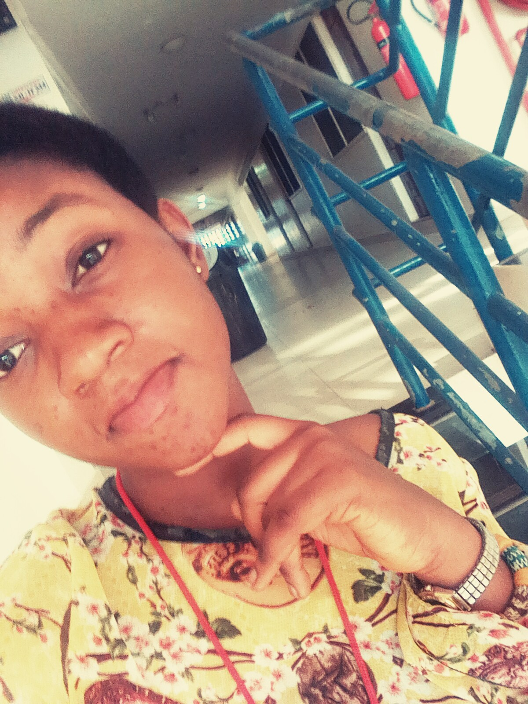

Adolescence is the gradual transition from childhood to adulthood.Some research shows that is between the ages ten to nineteen.It has two phases;early phase(10-14) and late phase(15-19).During adolescence,individuals undergo physical,phsycologica and emotional changes.
some of the physical changes include; Boys;
here are some physical changes in girls;
The are other changes that take place during adolescence.Some are social changes,mental changes and phsycological chages.In order to overcome the challenges that are faced during these chages, individuals must learn to ensure good gender relationns.
